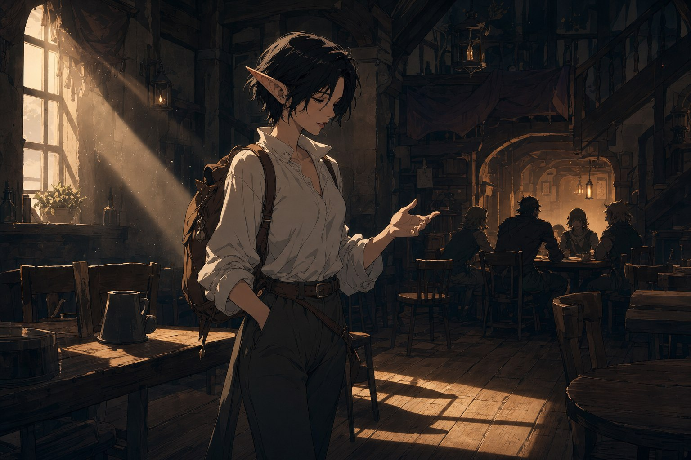
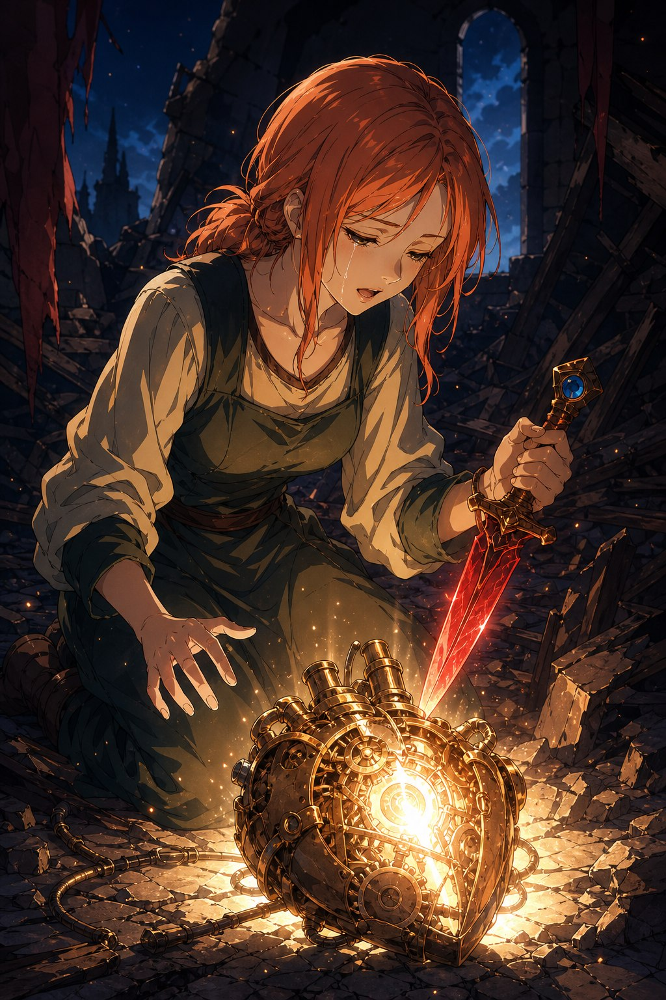
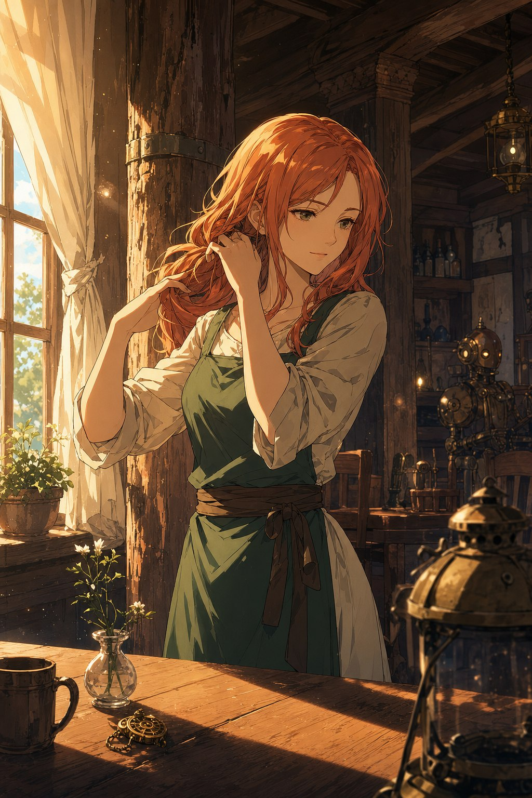

어느 해, 어느 날, 어딘가. 고요한 실내에 타임필드의 사냥용 부츠 소리만이 울렸다. 그녀는 손님용 테이블들 사이를 걸으며 이야기를 시작했다. 구제국력 722년에서 724년에 이르는 이 년간, 그 날 이후로 기계 에일라와 아르카딘은 행복했다고. 기계 에일라는 밝고 상냥하고 아름다웠으며, 에일라의 기억을 모두 지닌 채 웃고 옛이야기를 하고 노래를 부르며 가족처럼 지냈다고. 조금 떨어진 테이블의 크림색 곱슬머리 드루이드가 “다 아는 이야기잖아” 하고 투덜거렸지만, 타임필드는 말을 이었다. 아르카딘은 조금씩 위화감을 느끼기 시작했다고. 에일라가 늙지도, 감정이 변하지도 않았기에. 금속 테 안경의 드라코나가 조용히 짚었다. “사람은 마음도 바뀌어갑니다.” 기계는 노화하는 것이 아니라 마모될 뿐이고, 그것은 부품을 교체하면 리셋된다. 그때 아르카딘의 마음에, 훗날 그를 죽음으로 몰고 갈 한 가지 생각의 싹이 텄다. 어쩌면 내가 에일라를 죽인 것이 아닐까.
물론 기계 에일라에게서는 답을 얻을 수 없었다. 자신이 에일라라 여기는 그녀는 자신이 잘못되었다고 생각하지 않았으니까. 그녀는 진심으로 아르카딘을 사랑했다. 자신이 구해낸 아르카딘, 자신을 구해준 아르카딘과 언제까지고 행복하게 살 수 있으리라 믿었다. 하지만 아르카딘은 끝내 죄책감을 이기지 못했다. 유서를 남기고 스스로 생을 마감한 것이다. 지치지도 잊지도 못하는 기계 에일라는, 인간보다 더 많이, 한순간도 쉬지 않고 슬퍼했다.
브라에스로
현재, 프렐로트 폐공장 앞. 공명석 너머로 잔당들의 다급한 목소리가 들렸다. 기계 인형들은 이미 전부 시 안으로 들어가버렸다고. 메이퀸 시장의 보증이 있었으니 축제 대비라는 명목으로 대량의 인형이 들어가도 이상하지 않았던 것이다. 브라에스 시 외곽 공터에서, 어느새 육체파 트리오가 되어버린 황금빛 타오르는 눈보라와 붉은 발티야, 사도 일레나, 그리고 그들에게 시달리는 은빛 사붓한 바람이 그들을 맞았다. 상황을 정직하게 전하면 시민들이 알아줄 거라 믿고 여론전을 시도했던 근육 바보들은, 오히려 반쯤 쫓겨나듯 시를 떠나온 참이었다. 일레나의 매력조차 통하지 않았다는 그 말이 몇 번이고 반복되었다.
계획은 있었다. 도베르트와 레이피어는 이미 시 안에 잠입했고 — 사도인 레이피어에게 잠입이 거의 의미가 없다는 것은 은사바도 인정했다 — 한 팀은 광장에서 축제를 막을 예정이었다. 브라에스의 지리를 알고 메이퀸과 안면도 있는 세 사람에게는, 붉은 발티야가 알아낸 지하 수로를 통해 시청으로 잠입해 메이퀸과 대화하고 목적을 알아내달라는 임무가 주어졌다. 설득이 되지 않는다면. 은사바는 거기서 입을 다물었다. 떠나기 직전 일레나가 돌아와, 어떤 사람이 전해주라 했다는 단검을 던져주었다. 푸른 보석이 박혀 은은히 스스로 빛나는 에고 소드였다. 말을 할 때가 있는데, 그때 검이 말하는 대로 따르지 않으면 검이 영영 부서진다고. 지금까지 그 단검을 가진 이들은 모두 성공했다고. 단검의 이름은 심장을 꿰뚫는 단검, 대거하트였다.
지하 수로
악취를 각오하고 들어간 지하 수로는 이상하리만치 청결하고 잘 정비되어 있었다. 세틀러가 “우리 집보다 깨끗해” 하고 감탄했다. 그 깔끔함의 정체는 어딘가에서 튀어나와 깔짝대다 다시 숨어버리는 수로 정화기들과, 물속으로 사라지는 경비 포탑의 은닉성이었다. 말을 하며 길을 들어올리고 홍수를 일으키는 제어 콘솔까지, 예측 불가능한 기계들이 잇따라 길을 막았다. 그중에서도 말로 사람을 열받게 하는 데는 클락시를 이길 자가 없었다. “와, 너 정말 핵심을 찔렀어. 너희들 지금 완전 잘하고 있어. 너는 상위 1% 사용자야.” 그렇게 사근사근한 격려를 쏟아내면서도 무지막지한 힘으로 모든 걸 부수려 드는 클락시를, 한층 강해진 세 사람이 마침내 넘어섰다. 판델라는 악어로 변신해 수로를 자신의 전장으로 바꾸었고, 녹티스는 마법으로 환경을 조작하며 판세를 바꾸었다.
마지막 시장
시청으로 돌입하는 전투가 한창일 때, 에일라가 뒤를 돌아보며 외쳤다. “광장이에요! 축제가 시작되려 합니다!” 광장 상공에서 불꽃이 하나둘 터지고 있었다. 그러나 걱정과 달리 기계 인형들은 시민들을 해치지 않았고, 오히려 세 사람을 한 방향으로 안내했다. 축제가 잘 보이는 삼층 건물이었다. 안에는 기계 에일라가 앉아 있고, 그 뒤에 메이퀸이 굳은 표정으로 창밖을 바라보며 서 있었다. 기계 에일라는 스위치 하나를 보여주었다. 신호 한 번이면 이 광장이 전부 피바다가 될 거라고. 마을 사람 전체가 인질이었다.
기계 에일라는 자신의 칠 년을 들려주었다. 아르카딘이 스스로 목숨을 끊은 뒤 활동을 멈췄던 그녀는 칠 년 전 깨어났다. 아마도 언니를 느꼈던 것 같다고. 백스무 해 만에 움직이려니 모든 부품이 노후해 손목과 손가락 하나만 겨우 움직였다. 손가락 하나로 바닥을 긁어, 복도를 기어, 아르카딘의 연구소까지 가는 데만 여섯 달이 걸렸다. “아주 느렸지만, 나는 어차피 다른 할 수 있는 게 없었고, 나는 참을성이 아주 강하거든.” 남아 있던 기계 심장들로 작은 인형들을 만들고, 동전을 모으고, 글씨를 쓰는 기계를 만들고, 상인들과 거래를 시작했다. 그렇게 조금씩 자기 자신을 다시 만들어냈다. 팔릭스를 거쳐 메이퀸과 손을 잡고, 기계로 도시를 부흥시키려는 야심찬 시장에게 언니를 찾는 데 도움받는 조건으로. 결국 여관에 틀어박혀 일만 하던 언니를, 메이퀸이 낸 축제라는 아이디어로 찾아냈다.
세틀러가 그렇게 많은 기계를 만들어 인간을 지배할 셈이었느냐 묻자, 기계 에일라는 입술을 깨물며 그를 바라보았다. 경멸 대신 놀란 눈빛이었다. “언니를 찾고 싶었어.” 그러고는 갑자기 눈물을 흘렸다. 아르카딘이 변하지 않는 자신의 모습에 스스로를 의심하다 목숨을 끊었다고. “하지만 내가 어떻게 변해야 해? 나는 에일라인걸. 17세의 에일라로 만들어진걸. 언니. 언니를 만나고 싶었어. 언니가 있어야 했어.” 그녀는 성장하고 싶었다. 열일곱의 에일라가 아르카딘을 죽였으니, 성장할 수 있는 인간 에일라, 언니에게서 살아가는 법을 배워 열여덟이, 열아홉이, 스물넷이 되고 싶었다. 자신은 부탁해서 태어난 것이 아니라며, 인간이 자신의 동의 없이 자신이라는 종을 만들었으니 자신도 인간이 동의하지 않는 권리 하나쯤 가질 수 있지 않으냐며, 기계 에일라는 스위치를 들어올렸다. “그럼 이제, 집행해야겠네.”
그 순간 메이퀸이 소리쳤다. “클락시!” 클락시가 기계 에일라의 두 손을 등 뒤에서 붙잡았다. “이제 할 수 있는 다음 행동을 그림이나 표로 정리해드릴까요?” 그 틈에 메이퀸이 스위치를 빼앗아 박살냈다. 에일라의 눈길을 피하며 줄곧 창밖을 보던 것은, 시민들에 대한 걱정이었다. 다만 그 스위치는 어째서인지 이미 고장 나 있었고, 광장의 시민들은 무사했다. 기계 에일라는 손을 잡힌 채 고개를 숙였다가, 이내 메이퀸과 클락시를 쓰러뜨렸다. 도시를 위해 에일라를 떼어놓고 싶었을 뿐, 시민이 다치는 것은 원하지 않았던 시장의 마지막이었다.
두 명의 에일라
검은 드레스 자락을 정리하며 일어선 기계 에일라와의 싸움이 시작되었다. 시야에서 사라졌다 싶은 순간 판델라의 품 안으로 파고들어 뺨을 톡 건드리고는, 유압 실린더를 폭발시켜 날려버렸다. 우아한 동작의 끝점에서 기계의 우악스러움이 터져 나오는 그 움직임은, 그녀의 불안정한 내면과 꼭 닮아 있었다. 점점 장식적인 동작이 줄고 입가의 웃음이 사라지며, 그녀는 완전히 기계처럼 움직이기 시작했다. 자글롬이 공격을 피하며 그녀에게 물었다. 부모가 아닌 언니는 어떻게 보면 너와 같은 처지인데, 언니의 의사를 물어봐야 하지 않겠느냐고. 에일라는 어떻게 생각하느냐고. 이번에야말로 온전히 자신을 위한 선택을 할 때라고.
한 번 쓰러뜨려도 기계 심장이 빛나며 그녀는 다시 일어섰다. 마지막으로 그녀는 비명처럼 말을 토해냈다. “내가 진짜 에일라야! 왜 이렇게 날 괴롭히는 거야? 내 기억은 분명하고 연속적이야! 그런데 왜, 그저 뼈와 살로 이루어졌다는 이유로, 아르카딘 님이 버린 찌꺼기에 지나지 않는 네가 날 위협하는 건데!” 에일라가 답했다. “네. 당신이 에일라입니다. 하지만 당신은 목적을 위해 사람들을 많이 죽였어요. 그것을 두고 볼 수는 없어요.”
마지막 공격에 기계 에일라의 기계 심장이 바닥에 떨어졌다. 지금까지 본 어떤 것과도 다르게, 스스로 찬란한 빛을 내는 심장이었다. 그때 판델라의 가방 속 대거하트가 강렬한 붉은빛을 뿜기 시작했다. 그것을 쥐자 머릿속에 순서가 뒤섞인 단어들이 한꺼번에 떠올랐다. 파괴하라. 오직 나만이 저것을 부술 수 있다. 시간이 많지 않다. 마지막 기회다. 세틀러가 외쳤다. “부숴! 지금 부수지 않으면 언젠가 너희들이 죽고 나면 저것이 무슨 짓을 저지를지 모른다고! 너희들이 미래를 부수는 거라고!” 세틀러와 실반을 구하던 그 밤과 똑같은 장면이, 다시 한 번 반복되고 있었다.

에일라가 앞으로 나섰다. “제가 하겠습니다. 부탁드립니다.” 그녀는 어느새 한쪽 눈에서 눈물을 흘리고 있었다. 대거하트를 들어 빛나는 심장을 찔렀지만, 심장은 살아서 도망치듯 튕겨나갔다. 에일라가 다가가 속삭였다. “괜찮아, 에일라.” 다시 찔러도 심장은 튕겨나갔다. 에일라는 우는 아이를 재우듯, 조용히 노래를 부르기 시작했다. 감정을 잃은 뒤로 부르지 못했던 노래를. 심장의 진동이 잦아들었다. 짐승이 공포에 떨듯 하던 떨림이 잠자는 아기의 심장 박동처럼 잔잔해졌다. 에일라가 가만히 대거하트를 심장에 가져다 대자, 붉은빛들이 안으로 빨려들었고, 심장은 쩌적 소리를 내며 가루가 되어 흩어졌다. 에일라는 어느새 표정 없는 얼굴로 두 눈의 눈물을 닦았다. “끝났습니다.”
녹슨 못 여관
며칠 후, 브라에스 시의 녹슨 못 여관. 스트레가가 “오늘도 내가 쏜다! 마을을 구한 영웅들이니까!” 하고 외치는 사이, 삐걱이는 문을 열고 헝클어진 짧은 흑발의 엘프 여성이 들어왔다. 금빛 갑옷 대신 흰 셔츠에 작은 배낭을 멘 차림이었다. 에일라가 담담히 맞았다. “어서와요, 타임필드.” 타임필드는 다시 한 번 기계 에일라와 아르카딘의 이야기를 들려주고는, 왼팔을 잡고 고개를 떨궜다. “저는 진심으로, 그녀를 동정했습니다.”
에일라가 성큼성큼 다가섰다. “세라.” 타임필드가 세라는 죽었다며 불쾌한 기색을 내비쳤지만, 에일라는 말을 끊었다. “모두 당신이었죠?” 프렐로트 폐공장이 이상하리만치 비어 있고 이미 파괴된 인형들이 뒹굴었던 것도, 자신이 깨어난 곳이 세라의 연구소였던 것도. 타임브레이커 없이 그 연구소에 들어갈 수 있는 사람은 단 하나뿐이었다. 그날 세라가 캐스팅한 마법은 무엇이었는가. 연구소는 원래부터 시간축에 고정되어 가만히 놔두면 미래로 흘러가는데, 왜 굳이 울면서 조각을 짜맞추고 마법을 썼는가.
타임필드가 무너지듯 의자에 앉아 두 손에 얼굴을 묻었다. “난, 에일라를 질투했어.” 아르카딘은 자신에게 늘 친절하고 예의 바르고 연구소까지 지어주었지만, 오직 에일라 앞에서만 짜증을 내고 화를 내고, 오직 에일라 앞에서만 평범한 청년처럼 웃었다고. 아르카딘에게 그 실험을 제안하고 도운 것이 자신이라고. 감정과 기계는 그가 천재였지만 시공 마법은 자신의 전공이었고, 그가 열이레를 쉬지 않고 수술할 수 있었던 것도 자신의 마법 덕분이었다고. 수술을 마치고서야 자신이 무슨 일을 저질렀는지 알게 되었다고. 백스무 해가 지나서야 에일라를 깨운 것은, 아르카딘이나 기계 에일라의 눈에 그녀가 띄는 것을 원하지 않았기 때문이라고. 완전히 정지시키고 싶었던 기계 에일라가 어디서 멈췄는지 끝내 찾지 못해, 에일라를 되살리면 기계 에일라가 그녀를 찾아올 거라 여겼고, 실제로 그렇게 되었다고. “그게 내가 너에게 해줄 수 있는 마지막 배려라고 믿었어. 정말 미안해, 에일라.”
에일라는 표정 없이 그녀를 내려다보며 말했다. “세라. 저는 당신을 원망하거나, 화를 내지 못해요.” 세라가 그토록 바라던 질타를, 감정이 희박한 에일라는 끝내 줄 수 없었다. 타임필드는 이제 그 날에서 해방되었다며, 아르카딘의 제자도 에일라의 속죄자도 아닌, 여행을 좋아하는 엘프 세라 타임필드로서 세상을 둘러보러 떠나겠다고 했다. “여러분 모두에게, 설령 본인이 느끼지 못하더라도, 그럼에도 행복이 있기를.”

에일라
에일라는 기계 에일라가 왜 굳이 자신을 언니라 불렀을지 생각했다. 어쩌면 그저 돌봐줄 사람이, 살아가는 법을 배울 사람이 필요했던 것이 아닐까. 열일곱이었지만, 기계로서는 아기였으니까. “아니, 이제는 확신해요. 저도, 기계 에일라도, 에일라니까요.” 어쩌면 다른 방법을 몰랐을 거라고, 그녀는 말했다.
스트레가가 이제 다들 계획은 있느냐 물었다. 세틀러는 기계 실반과 다시 얘기해보고 싶다며 기계 심장을 하나 꺼냈다. 자글롬은 깔깔유머집에 이번 여정을 적고 있다고 했고, 녹티스는 세라가 남긴 연구를 확인하러 다시 모험을 떠난다고 했다. 판델라는 아버지에게 받은 빈 일기장을 에일라에게 건넸다. 잘 써달라며.
에일라는 모두에게 고맙다고 했다. 여러분 덕분에 많은 것을 배웠다고. 아직 감정도 욕망도 잘 생기지 않고 열일곱 이전의 기억도 떠오르지 않지만, 누구든 처음엔 의미도 기억도 없이 태어나지 않느냐고. 그래서 이 녹슨 못 여관에서 스트레가를 돕고 손님을 맞으며 살아가고 싶다고. 세라와 스트레가, 들러 준 손님들, 그리고 이유 없이 건네받은 호의와 걱정들. 어쩌면 더 큰 호의를 바라는 계산일지도, 좋은 사람으로 보이고 싶은 타산일지도 모르지만. “그래도 저는, 그걸 하고 싶다고 느껴요. 피험체 에러하트는 그 날 죽었습니다. 이제 에일라만 남았어요.”
오후의 햇살이 낡은 나무 기둥과 닳은 테이블 위로 쏟아져 들어왔다. 오래 묶어두었던 머리카락이 손가락 사이로 풀렸다가 익숙한 손길에 다시 정리되는 짧은 순간이, 이상할 정도로 느리게 느껴졌다. 에일라의 입가가 미세하게 풀어졌다. 따뜻한 오후의 햇살 때문인지, 어쩌면 희미하게 미소 짓는 것처럼도 보였다. “이제는, 아침에 망설임 없이 일어날 수 있을 것 같아요.”